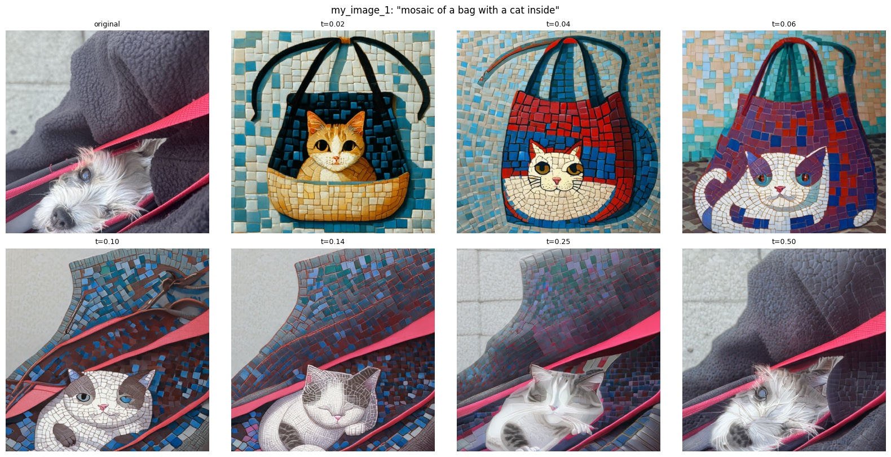
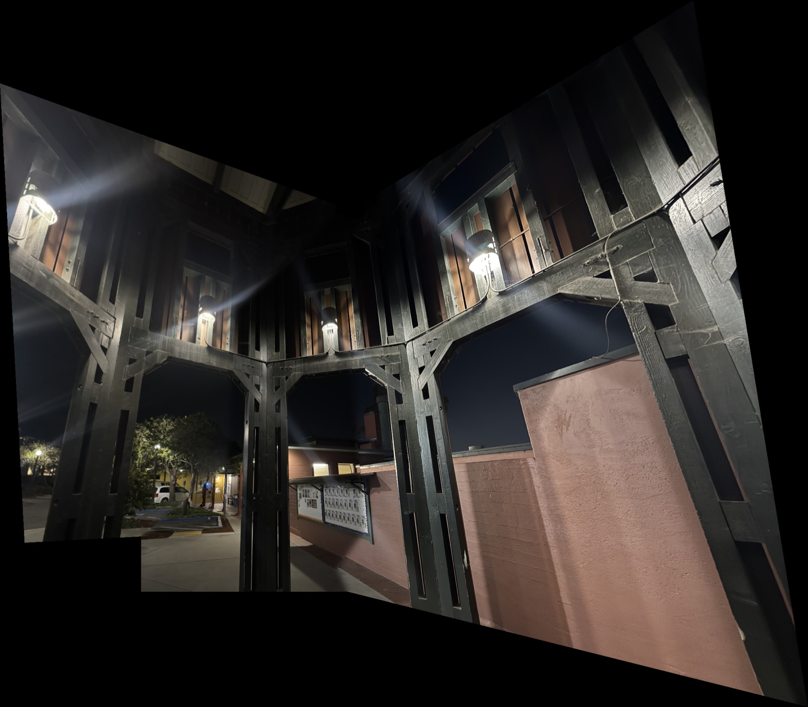

CS180 Portfolio
A collection of my projects for CS180 (Intro to Computer Vision and Computational Photography) at UC Berkeley.


Project 1
Colorizing the Prokudin-Gorskii photo collection with brute-force and pyramid channel alignment.
view project
Project 3
Generating and editing images with a pretrained flow model, then training flow matching UNets on MNIST from scratch.
view project
Project 4
Recovering homographies to rectify planar objects and stitch hand-held photos into blended panoramic mosaics.
view project